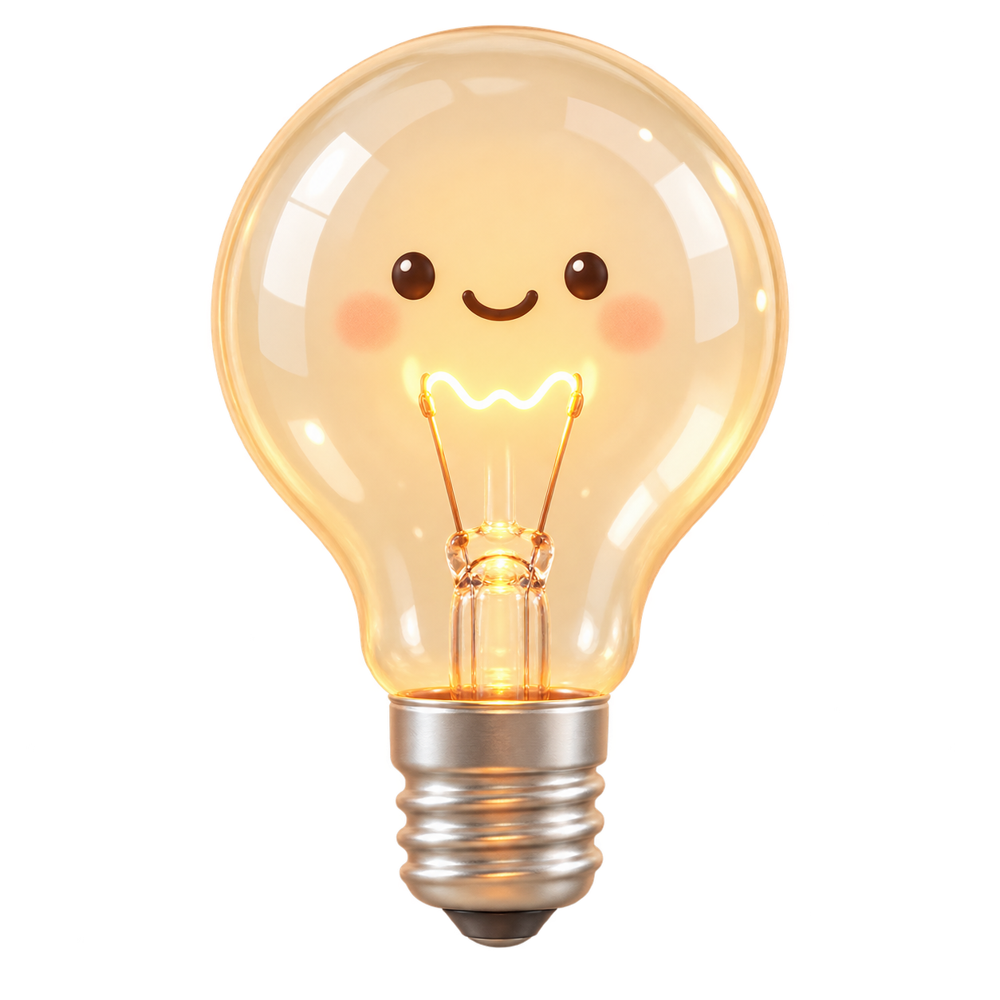
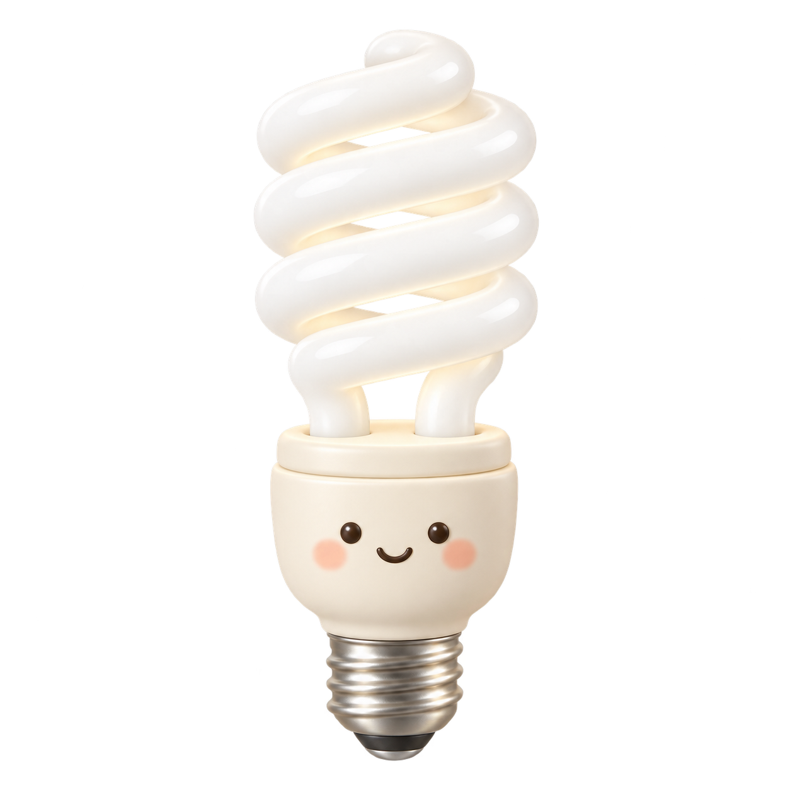

왼쪽 조명 설정
0.1 m1 m10 m
광원 개수와 거리 그림 보기
0.01 lx100,000 lx
LIGHTING STUDY / 01
두 빛을 나란히 놓고, 밝기와 색의 차이를 발견하세요.
LIGHT COMPARISON
1.00 m · 사람 키의 약 0.59배
1.00 m · 사람 키의 약 0.59배
0.20 lx
1.00 lx

63.66 lx

63.66 lx
100,000 lx
같은 간격 = 10배 · 눈금의 표시는 현재 비교 중인 두 조명입니다.
WINDOW LIGHT + LOCAL LIGHT
두 화면의 카메라·재질·노출은 같습니다. 밝은 창문과 촛불의 기여를 함께 보는 어두운 실내에서 시작합니다. 회색 측정면을 비교해보세요.
맞추기 버튼은 양쪽에 같은 노출을 한 번 적용합니다. 이후 조명을 바꿔도 노출은 고정됩니다. 실내 기준은 실내 조명만의 조도로 맞추며, 창빛도 함께 밝아집니다. 차이가 묻히면 창빛을 낮추거나 꺼보세요.
창 크기·방향·차폐 등을 합친 예시 비율입니다. 유리의 투과율이나 실제 건물의 계산값은 아닙니다.
여러 광원이 같은 거리에서 정면을 비춘다고 가정합니다. 측정면에서 촛불 1개는 1 m에서 약 1 lx입니다.
블룸은 노출 적용 후 밝은 부분 주변에 번짐을 더합니다. 조도(lx)는 바뀌지 않으며, 측정면의 순수한 명암 비교는 블룸을 끄고 확인하세요.
기본 장면은 창밖 100,000 lx의 0.003%가 측정면에 도달하는 어두운 실내를 가정합니다. 창빛 3 lx에 촛불 1 lx가 더해져 4 lx가 됩니다. 한낮 실내의 대표값이 아니라 두 빛의 기여를 보기 위한 시작 조건입니다.
화면은 넓은 범위의 선형 빛 값을 계산하고 공통 노출, 선택적 블룸, 톤매핑, 화면 색 변환 순서로 표시합니다. HDRI 환경 이미지를 사용하거나 모니터에 HDR 신호를 출력하는 기능은 아닙니다. 블룸은 밝기 문턱을 넘은 영역을 흐려 더하는 연출이며 강도를 제한했습니다. Three.js — 블룸의 문턱·강도·반경 참고 ↗
측정면의 창빛 = 창밖 기준 조도 × 도달 비율. 실내 조명 = 광도 × 개수 / 거리². 두 값은 같은 측정면에서 더한 뒤, 양쪽에 같은 반사율과 노출·톤매핑을 적용합니다. 증가율은 실내 조명을 더하기 전후의 물리적 조도 변화이며, 모니터 픽셀의 밝기 증가율과는 다릅니다.
방 그림은 고정된 방·창·측정 블록을 사용하는 교육용 근사입니다. 창빛의 방향과 창 모양은 고정되며, 창밖 조도와 도달 비율은 빛의 양을 조절합니다. 시점만 회전하며 광원과 측정면은 고정됩니다. 가까운 외벽은 방 안을 볼 수 있도록 생략합니다. 측정면이 블록 뒤에 가려지면 위치를 점선으로 표시합니다. 그림의 측정 패치는 중심점의 조도를 균일하게 표시합니다. 창면은 창 위치를 보여주는 밝기 근사이며, 어두운 면에는 약한 창빛 성분을 단순화해 더합니다. 실제 건물의 자연채광 해석, 스테인드글라스의 스펙트럼, 정확한 간접광과 사람의 암순응은 재현하지 않습니다. 광원 아이콘은 켜진 광원을 알려주는 표식이며 실제 불꽃의 발광 휘도가 아닙니다.
한낮의 야외 조도를 방 전체에 그대로 적용하면 안 됩니다. 같은 실내에서도 직사광이 닿는 곳과 창에서 먼 그늘의 빛은 다릅니다. 이 실험에서는 도달 비율을 바꾸어 그 차이를 가정하고, 촛불의 기여가 어떻게 달라지는지 비교합니다. 미국 에너지부 — 창과 실내 조건에 따른 자연채광 ↗
LIGHTING NOTES
공통 밝기는 두 화면에 같은 스톱만큼 더해집니다. 각 화면 아래의 개별 노출 보정은 그쪽에만 더해집니다. 최종 노출 = 기본 노출 + 공통 밝기 + 개별 보정입니다.
기본 노출은 0에서 시작합니다. ‘각 장면 자동 노출’에서는 각 조도의 18% 회색 기준에 맞춰 기본 노출을 따로 계산합니다. 자동 노출 후에도 공통 밝기와 개별 보정을 조절할 수 있습니다. ‘같은 노출로 맞추기’와 왼쪽·오른쪽에 맞추기는 개별 보정을 0으로 되돌립니다.
양쪽에 같은 카메라 노출을 적용합니다. 빛의 세기 차이를 그대로 비교해보세요.
노출을 올려도 두 빛의 물리적인 비율은 바뀌지 않습니다.
어떤 빛을 흰색으로 받아들이느냐에 따라 다른 빛의 색 인상도 달라집니다. 따뜻한 촛불을 흰색의 기준으로 맞추면, 상대적으로 중립적인 햇빛은 시안·블루 쪽으로 보입니다.
이 실험의 ‘왼쪽 빛 기준 / 오른쪽 빛 기준’은 선택한 빛을 중립색으로 보정하고, 같은 보정을 양쪽에 적용합니다. 카메라 화이트밸런스처럼 색의 기준을 바꾸는 교육용 근사입니다. 빛의 조도와 노출 차이는 그대로 유지됩니다.
달빛의 시안은 연출용 기본값입니다. 실제 달빛과 눈의 반응은 아래 ‘달은 노란데, 달빛은 왜 푸르게 느껴질까요?’에서 근거와 함께 살펴보세요.
MOONLIGHT & VISION
하늘의 밝은 달 자체와, 달빛을 받은 어두운 풍경을 나누어 생각해보세요. 대기를 통과하며 달라진 빛의 색과, 어두운 곳에 적응한 눈의 반응이 함께 관여합니다.
지평선 가까이에 있는 달의 빛은 대기를 더 길게 통과합니다. 이 과정에서 파란 성분이 더 많이 산란되어 시선 밖으로 빠져나가므로, 달이 연노랑이나 주황빛으로 보일 수 있습니다. 높이 뜬 달과 막 떠오른 달의 색이 다른 이유입니다.
NASA — 지평선 근처 달이 더 노랗게 보이는 이유 ↗
보름달은 해 질 무렵 떠오릅니다. 따라서 저녁에 막 뜬 보름달을 보았다면 낮은 고도가 노란 인상에 영향을 주었을 가능성이 있습니다. 보름달이 언제나 노란 것은 아니며, 관찰한 높이와 대기 상태를 함께 고려해야 합니다.
밝은 곳에서 색을 구분하는 데 주로 관여하는 세포는 원추세포입니다. 어두운 곳에 적응하면 희미한 빛에 민감한 간상세포의 역할이 커지고, 눈의 밝기 감도가 짧은 파장 쪽으로 이동합니다. 붉은 계열에 비해 파랑·청록 계열이 상대적으로 더 밝게 보이게 됩니다. 이를 푸르키네 효과(Purkinje effect 또는 shift)라고 합니다.
예를 들어 낮에 눈에 잘 띄던 붉은 꽃이 어스름에는 어둡게 가라앉고, 주변의 푸른 꽃이나 잎이 상대적으로 더 잘 보일 수 있습니다. 물체의 반사 특성이 바뀐 것이 아니라, 빛에 반응하는 눈의 비중이 달라진 것입니다.
핵심은 색들 사이의 상대적인 밝기 변화입니다. 이 현상만으로 풍경 전체가 파란색으로 보인다고 설명할 수는 없습니다.
Anstis (2002), Vision Research — 푸르키네 효과와 밝기·망막 위치에 따른 변화 · 논문 PDF ↗
어슴푸레해서 간상세포와 원추세포가 함께 작동하는 조건에서는, 두 세포의 신호가 상호작용하며 색 인상에도 영향을 줄 수 있습니다. 원숭이 망막을 조사한 연구에서는 간상세포의 신호가 파랑–노랑 색 처리 경로로 들어가는 것을 확인했고, 이를 밤의 푸른 인상을 설명할 수 있는 기전으로 제안했습니다.
이는 가능한 생리적 설명이며, 모든 사람이 모든 밤 풍경을 같은 파란색으로 본다는 뜻은 아닙니다. 따라서 ‘달빛의 RGB가 원래 파랗기 때문에 밤이 파랗다’고 단정하지 않는 것이 좋습니다.
이 실험의 달빛에는 밤의 차가운 인상을 표현하기 위해 은은한 시안을 기본값으로 넣었습니다. 실제 달빛의 스펙트럼을 측정한 색이나, 눈의 반응을 계산해서 얻은 색이 아닙니다.
‘흰색의 기준’은 양쪽에 같은 화이트밸런스 보정을 적용하는 교육용 근사입니다. 푸르키네 효과, 간상세포·원추세포의 상호작용, 실제 시각의 동시 색 대비와 시간에 따른 암순응은 이 모델에서 재현하지 않습니다. 위 설명은 배경 지식이며, 해당 현상을 켜는 기능은 아닙니다.
라이팅을 설명할 때는 광원의 색, 표면에 도착한 빛의 양, 눈이나 카메라가 표현하는 결과를 나누어 살펴보세요.
햇빛 환경 카드는 직사광 100,000 lx, 야외 그늘 10,000 lx, 흐린 날 5,000 lx, 비 오는 날 1,000 lx, 실내 100 lx, 어두운 실내 10 lx를 비교용 예시로 사용합니다. 특히 비 오는 날과 실내 값은 학습을 위해 선택한 시나리오이며, 날씨별 측정 표준이나 실측값이 아닙니다. 비가 와도 밝을 수 있고, 흐린 날이 그늘보다 밝을 수도 있습니다. 실내는 인공조명을 더하지 않은 낮빛의 예시입니다. 이 카드들은 조도만 바꾸며, 날씨에 따른 색온도와 그림자 부드러움은 바꾸지 않습니다.
Open University — 낮빛과 흐린 하늘의 조도 ↗
전구의 럭스는 종류만으로 정해지지 않습니다. 백열등과 전구형 형광등은 같은 800 lm·거리·배광을 가정했습니다.
| 조명 | 기본 조도 | 조건 |
|---|---|---|
| 달빛 | 0.20 lx | 보름달 · 지면 예시 |
| 촛불 | 1.00 lx | 1 cd · 정면 1 m |
| 백열등 | 63.66 lx | 800 lm · 전방향 · 1 m |
| 형광등 | 63.66 lx | 800 lm CFL · 전방향 · 1 m |
| 햇빛 | 100,000 lx | 한낮 직사광 |
촛불에 고정된 ‘럭스’가 있는 것은 아닙니다. 광도(cd)는 특정 방향으로 나오는 빛, 조도(lx)는 측정면에 도착한 빛을 나타냅니다.
여기서는 정면 입사(θ = 0°), 촛불 1개당 1 cd를 가정합니다. 여러 촛불은 모두 같은 거리에 있다고 단순화했습니다. 실제 불꽃의 크기와 방향에 따라 값이 달라집니다.
1스톱 밝게 하면 표시 전 빛의 값이 2배가 됩니다. 100,000 대 1의 조도 차이는 약 16.61스톱입니다.
‘각 장면에 자동 노출’은 각 조명에서 18% 회색 기준이 비슷하게 보이도록 노출을 별도로 맞춥니다. 사진 두 장이 비슷하게 밝다고 해서 광원이 같은 세기는 아닙니다.
햇빛 아래에서도 불꽃 자체는 보일 수 있습니다. 하지만 불꽃이 주변 벽과 바닥에 더하는 조명 효과는 훨씬 약할 수 있습니다.
성당의 실내를 한낮 야외 조도로 채우지는 마세요. 창으로 들어오는 빛, 차폐, 간접광을 구분한 뒤 노출을 고정하고 촛불의 기여를 비교해보세요.
두 그림은 확산 구와 평면을 계산한 교육용 렌더입니다. 조도 계산과 화면 표현을 분리했습니다. 광원 방향은 동일하며, 구 주변의 조명은 균일한 평행광으로 단순화합니다. 점광원의 거리 조절은 측정면의 조도에 적용하며, 구의 각 지점까지의 거리 변화는 재현하지 않습니다. 거울 반사, 간접광, 불꽃의 발광, 블룸, 인간의 암순응은 포함하지 않습니다.
전구 예시는 E = Φ / (4πr²)에 따라 계산합니다. 백열등과 전구형 형광등(CFL) 모두 800 lm일 때 전방향 점광원·정면 1 m에서 약 63.66 lx입니다. 실제 조명기구의 배광과 가까운 거리의 면광원 효과는 포함하지 않습니다. 달빛은 보름달의 지면 조도 예시 0.2 lx를 사용합니다. 달빛의 은은한 시안은 연출용 색상입니다. 암순응은 재현하지 않습니다.
확산 반사 모델은 L = ρE/π입니다. 공통 노출 0에서 100,000 lx를 받는 18% 정면 회색이 표시 선형값 0.18이 되도록 보정한 Reinhard 톤매핑 후 sRGB로 표시합니다. 광원 색은 상대 휘도를 유지하는 RGB 근사이며, 실제 스펙트럼 측정값이 아닙니다. 흰색 기준 전환은 선형 RGB 채널을 기준광의 RGB로 나눈 뒤 휘도를 정규화하는 화이트밸런스 근사입니다. 정식 색 외관 모델이나 생리학적 시각 시뮬레이션이 아닙니다. 이 화면은 모니터에서 실제 100,000 lx를 재현하거나 특정 엔진의 EV100 설정을 보장하지 않습니다.
Canadian Conservation Institute — 조도, 촛불 1m와 한낮 직사광의 대략적인 값 ↗
NIST — 광도와 칸델라 ↗
NPS — 보름달의 조도 약 0.1–0.3 lx ↗
EIA — 800 lm 백열등과 전구형 형광등 비교 ↗